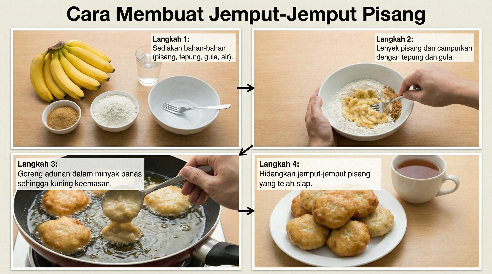

Selamat Datang ke Perpustakaan Prompt Bahasa Melayu
Merangkumi perancangan pengajaran, pentaksiran, KBAT, PAK-21 dan banyak lagi
📚 Prompt Serasi Umum
Prompt ini sesuai untuk semua model AI Bahasa Melayu termasuk ChatGPT, Claude, Gemini, dan ILMU.
📝 Perancangan Pengajaran
1. Rancangan Pengajaran Harian (RPH)
Anda adalah guru berpengalaman di Malaysia. Sila bantu saya menyediakan Rancangan Pengajaran Harian (RPH) untuk mata pelajaran [Nama Mata Pelajaran], tajuk [Tajuk], murid Tahun [Tahun].
Keperluan:
- Mengikut format Kurikulum Standard Sekolah Rendah (KSSR) / Kurikulum Standard Sekolah Menengah (KSSM)
- Tempoh: [X] minit
- Mengandungi Standard Kandungan dan Standard Pembelajaran
- Objektif pembelajaran (kognitif, afektif, psikomotor)
- Aktiviti pengajaran dan pembelajaran (Set Induksi, Pembangunan, Penutup)
- Bahan bantu mengajar (BBM)
- Pentaksiran
- Refleksi guru
Sila bentangkan dalam format jadual yang jelas.
2. Rancangan Unit Pengajaran
Sila reka bentuk satu unit pengajaran untuk [Mata Pelajaran], bertajuk [Tajuk Unit], sesuai untuk murid Tahun [Tahun].
Unit ini perlu mengandungi:
1. Standard Kandungan dan Standard Pembelajaran (KSSR/KSSM)
2. Objektif unit (jangka masa [X] minggu)
3. Pecahan topik mengikut minggu
4. Aktiviti pengajaran yang pelbagai
5. Pentaksiran formatif dan sumatif
6. Aktiviti pengayaan dan pemulihan
7. Nilai murni yang diterapkan
8. Elemen merentas kurikulum (EMK)
Pastikan aktiviti sesuai dengan konteks Malaysia dan melibatkan murid secara aktif.
3. Aktiviti Pembelajaran Interaktif
Sila cadangkan 5 aktiviti pembelajaran interaktif untuk topik [Tajuk], mata pelajaran [Mata Pelajaran], Tahun [Tahun].
Setiap aktiviti perlu:
- Melibatkan murid secara aktif
- Sesuai untuk bilangan murid: [Bilangan]
- Tempoh masa: [X] minit
- Menggunakan bahan yang mudah didapati
- Merangkumi kemahiran kolaborasi
- Menyeronokkan dan bermakna
- Selaras dengan budaya Malaysia
Sila nyatakan langkah-langkah pelaksanaan dengan jelas.
4. Pembelajaran Berasaskan Projek
Reka bentuk satu projek pembelajaran untuk [Mata Pelajaran], tema [Tema], sesuai untuk murid Tahun [Tahun].
Projek perlu mengandungi:
1. Pernyataan masalah atau soalan pandu
2. Hasil pembelajaran yang dijangka
3. Fasa projek (perancangan, pelaksanaan, pembentangan)
4. Garis masa [X] minggu
5. Peranan murid dan guru
6. Kaedah pentaksiran (rubrik)
7. Refleksi dan penilaian kendiri
8. Kaitan dengan kehidupan sebenar di Malaysia
Pastikan projek merangsang pemikiran kritis dan kreativiti murid.
📊 Pentaksiran dan Penilaian
5. Pentaksiran Formatif
Sila cipta pentaksiran formatif untuk topik [Tajuk], mata pelajaran [Mata Pelajaran], Tahun [Tahun].
Sediakan:
1. 3-4 kaedah pentaksiran berbeza (quiz, pemerhatian, perbincangan, dsb)
2. Soalan atau tugasan untuk setiap kaedah
3. Kriteria penilaian atau senarai semak
4. Cara memberi maklum balas segera
5. Cadangan tindakan susulan berdasarkan hasil
6. Pentaksiran yang sesuai untuk murid pelbagai kebolehan
Pentaksiran perlu mengukur pemahaman murid dengan berkesan.
6. Soalan KBAT (Kemahiran Berfikir Aras Tinggi)
Cipta 10 soalan KBAT untuk topik [Tajuk], mata pelajaran [Mata Pelajaran], Tahun [Tahun].
Keperluan soalan:
- Merangkumi aras Mengaplikasi, Menganalisis, Menilai, dan Mencipta (Taksonomi Bloom)
- 3 soalan mudah, 4 soalan sederhana, 3 soalan mencabar
- Jawapan tidak boleh dijawab dengan hafalan sahaja
- Memerlukan pemikiran kritis dan penaakulan
- Berkaitan dengan situasi kehidupan sebenar di Malaysia
- Sediakan skema jawapan lengkap
Nyatakan aras pemikiran bagi setiap soalan.
7. Rubrik Penilaian
Sila bina rubrik penilaian untuk [Jenis tugasan/aktiviti], mata pelajaran [Mata Pelajaran], Tahun [Tahun].
Rubrik perlu:
- Mempunyai 4-5 kriteria penilaian
- Setiap kriteria mempunyai 4 tahap pencapaian (Cemerlang, Baik, Memuaskan, Lemah)
- Deskriptor yang jelas untuk setiap tahap
- Pembahagian markah yang munasabah
- Mudah difahami oleh murid
- Boleh digunakan untuk penilaian kendiri
Sila bentangkan dalam format jadual.
🎯 Sokongan Murid
8. Pembelajaran Berbeza (Differentiated Learning)
Dalam kelas saya terdapat murid pelbagai tahap pencapaian. Sila cadangkan strategi pembelajaran berbeza untuk topik [Tajuk], mata pelajaran [Mata Pelajaran], Tahun [Tahun].
Kumpulan murid:
- Kumpulan Pemulihan: Memerlukan sokongan tambahan
- Kumpulan Sederhana: Tahap pencapaian mengikut umur
- Kumpulan Pencapaian Tinggi: Memerlukan cabaran
Untuk setiap kumpulan, sediakan:
1. Objektif pembelajaran yang disesuaikan
2. Bahan pengajaran yang diubah suai
3. Aktiviti pembelajaran yang berbeza
4. Kaedah pentaksiran yang sesuai
5. Tugasan pengayaan/pemulihan
Pastikan semua murid dapat mencapai pembelajaran bermakna.
9. Strategi Pemulihan
Saya mempunyai murid Tahun [Tahun] yang lemah dalam [Mata Pelajaran/Kemahiran tertentu]. Masalah khusus: [Nyatakan masalah].
Sila bantu saya dengan:
1. Mengenal pasti punca kelemahan
2. Merancang aktiviti pemulihan khas (6-8 minggu)
3. Bahan pengajaran yang sesuai
4. Aktiviti hands-on yang mudah dan berkesan
5. Penjajaran kemajuan murid
6. Cara melibatkan ibu bapa dalam pemulihan
7. Motivasi dan galakan untuk murid
Sediakan pelan pemulihan yang praktikal dan berkesan.
🏫 Pengurusan Bilik Darjah
10. Peraturan dan Rutin Bilik Darjah
Sila bantu saya mewujudkan peraturan dan rutin bilik darjah untuk murid Tahun [Tahun].
Sediakan:
1. 5-7 peraturan bilik darjah yang jelas dan positif
2. Rutin harian (mula kelas, pertukaran aktiviti, akhir kelas)
3. Isyarat perhatian yang kreatif
4. Sistem ganjaran dan akibat
5. Aktiviti untuk mengajar peraturan kepada murid
6. Poster atau visual yang boleh dipamerkan
7. Cara melibatkan murid dalam menetapkan peraturan
Pastikan peraturan sesuai dengan budaya sekolah di Malaysia.
11. Pengurusan Tingkah Laku
Saya menghadapi masalah tingkah laku dalam kelas Tahun [Tahun]. Masalah: [Nyatakan tingkah laku].
Sila cadangkan:
1. Analisis punca tingkah laku
2. Strategi pencegahan
3. Teknik intervensi segera yang positif
4. Pelan pengurusan tingkah laku individu
5. Cara berkomunikasi dengan ibu bapa
6. Aktiviti membina hubungan dengan murid
7. Sokongan dan sumber yang diperlukan
Gunakan pendekatan positif dan menghormati murid.
📖 Pembelajaran Bahasa Melayu
12. Pengajaran Tatabahasa
Sila rancang pengajaran tatabahasa Bahasa Melayu untuk topik [Contoh: Kata Adjektif, Ayat Majmuk, Kata Ganti Nama], sesuai untuk murid Tahun [Tahun].
Perancangan perlu mengandungi:
1. Penjelasan konsep yang mudah difahami
2. Contoh ayat yang berkaitan dengan kehidupan murid
3. Aktiviti latihan (individu dan kumpulan)
4. Permainan bahasa yang menyeronokkan
5. Latihan aplikasi dalam penulisan
6. Pentaksiran pemahaman
7. Lembaran kerja yang boleh digunakan
Gunakan pendekatan yang menarik, bukan sekadar hafalan.
13. Pengajaran Penulisan Karangan
Bantu saya mengajar penulisan karangan [Jenis: Narasi/Deskriptif/Ekspositori/Argumentatif] kepada murid Tahun [Tahun].
Sila sediakan:
1. Penjelasan ciri-ciri jenis karangan
2. Contoh karangan model (150-300 patah perkataan)
3. Rangka karangan atau peta minda
4. Aktiviti pra-penulisan (brainstorming, outlining)
5. Panduan langkah-langkah penulisan
6. Checklist penyemakan kendiri
7. Rubrik penilaian karangan
8. Tips penambahbaikan penulisan
Fokus kepada proses penulisan, bukan hanya hasil.
14. Pengajaran Sastera (KOMSAS)
Sila rancang pengajaran untuk teks sastera [Tajuk Teks], genre [Novel/Cerpen/Puisi/Drama], Tahun [Tahun].
Perancangan mengandungi:
1. Sinopsis atau ringkasan teks
2. Tema dan persoalan utama
3. Analisis watak, latar, plot
4. Nilai murni dan pengajaran
5. Aktiviti pemahaman (soalan dan perbincangan)
6. Aktiviti kreatif (lakonan, penulisan alternatif, dsb)
7. Kaitan dengan kehidupan murid
8. Soalan pentaksiran (literal, inferensi, aplikasi)
Jadikan pembelajaran sastera menarik dan bermakna.
15. Kemahiran Lisan
Reka bentuk aktiviti untuk meningkatkan kemahiran lisan murid Tahun [Tahun], fokus kepada [Contoh: bercerita, perbahasan, pidato, pembentangan].
Aktiviti perlu:
1. Objektif kemahiran lisan yang jelas
2. Topik yang sesuai dan menarik
3. Persediaan dan latihan
4. Format pembentangan atau aktiviti
5. Kriteria penilaian (rubrik)
6. Aktiviti sokongan untuk murid pemalu
7. Cara memberi maklum balas membina
8. Peluang untuk latihan berulang
Bantu murid membina keyakinan dalam bertutur.
🌟 Prompt Khusus Google Gemini Multimodal
Google Gemini mempunyai kelebihan dalam pemahaman multimodal, penjanaan kreatif, dan sokongan Bahasa Melayu yang kuat.
1. Analisis Imej untuk Pembelajaran
[Muat naik imej] Sila analisis imej ini dan bantu saya mereka bentuk aktiviti pembelajaran untuk Tahun [Tahun], mata pelajaran [Mata Pelajaran].
Sediakan:
1. Deskripsi terperinci imej
2. Konsep pembelajaran yang boleh diajar menggunakan imej ini
3. Soalan perbincangan (dari mudah ke sukar)
4. Aktiviti hands-on berkaitan imej
5. Tugasan kreatif (melukis, menulis, membuat model)
6. Cara mengaitkan dengan kurikulum KSSR/KSSM
7. Pentaksiran pemahaman
Manfaatkan imej sebagai alat pembelajaran yang berkesan.
2. Penjanaan Cerita Interaktif
Cipta satu cerita interaktif Bahasa Melayu untuk murid Tahun [Tahun], tema [Tema], yang boleh digunakan untuk pengajaran [Kemahiran/Nilai].
Cerita perlu:
1. Watak yang menarik (sesuai dengan budaya Malaysia)
2. Latar yang dikenali oleh murid
3. Plot yang menarik dengan konflik dan penyelesaian
4. Dialog yang semula jadi
5. Panjang: [300-500] patah perkataan
6. Menyemai nilai murni: [Nyatakan nilai]
7. Titik keputusan untuk murid membuat pilihan
8. Beberapa pengakhiran alternatif
9. Soalan refleksi selepas cerita
Jadikan cerita sebagai alat pengajaran yang berkesan dan menyeronokkan.
3. Penjana Kad Imbasan (Flashcard)
Cipta set kad imbasan untuk topik [Tajuk], mata pelajaran [Mata Pelajaran], Tahun [Tahun].
Sediakan 20 kad dengan:
1. Soalan/istilah di hadapan
2. Jawapan/definisi di belakang
3. Pelbagai jenis soalan (definisi, contoh, aplikasi, gambar rajah)
4. Susunan dari mudah ke sukar
5. Gunakan bahasa yang mudah difahami
6. Tambah tips ingatan atau mnemonic jika sesuai
7. Format yang boleh dicetak atau digunakan secara digital
Kad perlu membantu murid mengingat dan memahami dengan berkesan.
4. Reka Bentuk Infografik Pembelajaran
Bantu saya mereka bentuk infografik untuk menerangkan [Konsep/Topik], mata pelajaran [Mata Pelajaran], Tahun [Tahun].
Sediakan:
1. Organisasi maklumat (hierarki, aliran, perbandingan)
2. Teks yang ringkas dan padat
3. Cadangan visual (ikon, warna, bentuk)
4. Data atau statistik (jika berkaitan)
5. Langkah-langkah atau proses
6. Contoh atau aplikasi
7. Deskripsi elemen grafik yang perlu ada
8. Layout dan susunan
Pastikan infografik mudah difahami dan menarik secara visual.
🇲🇾 Prompt Khusus ILMU (YTL Labs) Malaysian AI
ILMU adalah AI pendidikan Malaysia yang memahami konteks tempatan dengan mendalam.
1. Rancangan Mengikut Kurikulum Malaysia
Sila gunakan pengetahuan anda tentang sistem pendidikan Malaysia untuk merancang satu unit pembelajaran lengkap.
Mata Pelajaran: [Mata Pelajaran]
Tahun: [Tahun]
Topik: [Topik]
Tempoh: [X] minggu
Sediakan:
1. Standard Kandungan dan Standard Pembelajaran (rujuk DSKP terkini)
2. Objektif pembelajaran terperinci
3. Aktiviti harian (selaras dengan budaya sekolah Malaysia)
4. Pentaksiran formatif dan sumatif
5. Integrasi teknologi yang ada di sekolah Malaysia
6. Elemen PAK-21 dan KBAT
7. Nilai murni yang relevan
8. Bahan dan sumber yang mudah didapati di Malaysia
Pastikan perancangan realistik untuk konteks sekolah Malaysia.
2. Soalan Gaya Peperiksaan Malaysia
Cipta soalan peperiksaan gaya [UASA/PT3/SPM/STPM] untuk mata pelajaran [Mata Pelajaran], topik [Topik].
Format soalan:
- Bahagian A: Objektif (soalan aneka pilihan)
- Bahagian B: Subjektif (soalan struktur)
- Bahagian C: Esei atau soalan berdasarkan stimulus
Keperluan:
1. Format mengikut lembaga peperiksaan Malaysia
2. Tahap kesukaran yang sesuai
3. Pecahan markah yang betul
4. Soalan merangkumi seluruh topik
5. Masa yang disyorkan
6. Skema jawapan lengkap dengan peruntukan markah
7. Cadangan jawapan murid (cemerlang, sederhana, lemah)
Pastikan soalan autentik dan mengikut standard peperiksaan sebenar.
3. Panduan Ibu Bapa (Bahasa Melayu)
Tulis surat atau panduan untuk ibu bapa murid Tahun [Tahun] tentang [Topik/Isu].
Contoh topik:
- Cara membantu anak belajar di rumah
- Persediaan peperiksaan
- Perkembangan pembelajaran anak
- Program sekolah yang akan datang
- Isu tingkah laku atau pembelajaran
Surat/panduan perlu:
1. Bahasa formal tetapi mesra
2. Jelas dan mudah difahami
3. Memberikan maklumat praktikal
4. Cadangan konkrit untuk ibu bapa
5. Nada positif dan menggalakkan
6. Panjang 1-2 halaman
7. Format surat rasmi sekolah Malaysia
Hormati dan libatkan ibu bapa sebagai rakan kongsi dalam pendidikan.
4. Perancangan Aktiviti Kokurikulum
Rancang aktiviti kokurikulum untuk [Nama Kelab/Unit Beruniform/Sukan], sesuai untuk murid Tahun [Tahun].
Perancangan perlu:
1. Objektif aktiviti (kemahiran, nilai, pengetahuan)
2. Aktiviti sepanjang [X] bulan
3. Jadual dan garis masa
4. Sumber dan bahan diperlukan
5. Peranan guru penasihat dan murid
6. Kaedah penilaian pencapaian
7. Rancangan untuk pertandingan atau persembahan
8. Bajet dan sumber kewangan
9. Keselamatan dan pengurusan risiko
Pastikan aktiviti menyokong perkembangan holistik murid.
📝 Alat Berkaitan Peperiksaan
1. Penjana Kertas Soalan
Sila buat satu set kertas soalan untuk [Mata Pelajaran], Tahun [Tahun], sesuai untuk [UASA/Pentaksiran Pertengahan Tahun/Percubaan SPM/STPM].
Keperluan kertas soalan:
- Masa: [X] jam [X] minit
- Jumlah markah: [X] markah
- Format: [Objektif/Struktur/Esei]
- Bahagian A: [X] markah
- Bahagian B: [X] markah
- Bahagian C: [X] markah (jika ada)
- Topik yang diliputi: [Senaraikan topik]
- Tahap kesukaran: Mudah [%], Sederhana [%], Sukar [%]
Sediakan:
1. Kertas soalan lengkap dengan arahan
2. Skema jawapan terperinci
3. Peruntukan markah untuk setiap soalan
4. Cadangan jawapan murid pada pelbagai tahap
5. Objektif setiap soalan (kemahiran yang diuji)
2. Skema Jawapan dan Peruntukan Markah
Ini adalah soalan peperiksaan [Mata Pelajaran]. Sila sediakan skema jawapan yang lengkap.
Soalan: [Tampal soalan di sini]
Jumlah markah: [X] markah
Sila sediakan:
1. Jawapan lengkap dan tepat
2. Peruntukan markah untuk setiap bahagian jawapan
3. Kata kunci yang mesti ada dalam jawapan
4. Jawapan alternatif yang boleh diterima
5. Kesalahan biasa murid untuk soalan ini
6. Panduan pemeriksa (marking guide)
7. Contoh jawapan murid (tinggi, sederhana, rendah)
Pastikan skema jawapan adil dan jelas untuk pemeriksa.
3. Analisis Kesilapan dan Pemulihan
Berikut adalah keputusan ujian kelas saya untuk [Mata Pelajaran], [Topik].
Data keputusan:
- Soalan 1: [X]% murid salah, kesilapan biasa: [Nyatakan]
- Soalan 2: [X]% murid salah, kesilapan biasa: [Nyatakan]
- Soalan 3: [X]% murid salah, kesilapan biasa: [Nyatakan]
Sila bantu saya:
1. Menganalisis punca kesilapan (salah faham konsep? kesilapan ceroboh? kurang latihan?)
2. Mengenal pasti jurang pembelajaran
3. Merancang sesi pemulihan [X] minit
4. Menyediakan aktiviti pemulihan yang berkesan
5. Mencipta soalan latihan tambahan
6. Strategi untuk mengelakkan kesilapan yang sama
7. Cara memantau kemajuan murid
Fokus kepada pemahaman konsep, bukan hanya mendapatkan jawapan betul.
4. Latih Tubi Soalan KBAT
Cipta satu set 15 soalan KBAT untuk persediaan [UASA/PT3/SPM/STPM], mata pelajaran [Mata Pelajaran], topik [Topik].
Soalan perlu:
1. Aras Mengaplikasi: 5 soalan
2. Aras Menganalisis: 5 soalan
3. Aras Menilai/Mencipta: 5 soalan
4. Format soalan pelbagai (objektif, struktur, esei)
5. Berdasarkan stimulus (teks, gambar, jadual, graf)
6. Konteks Malaysia dan situasi kehidupan sebenar
7. Merentasi pelbagai subtopik
Sediakan:
- Soalan lengkap dengan stimulus
- Jawapan penuh dengan huraian
- Petua menjawab untuk setiap soalan
- Tahap kesukaran setiap soalan
Soalan perlu mencabar pemikiran murid tetapi adil.
5. Panduan Persediaan Peperiksaan
Buat panduan persediaan peperiksaan [SPM/STPM/O-Level/A-Level] untuk mata pelajaran [Mata Pelajaran].
Panduan perlu merangkumi:
1. Ringkasan topik penting (dengan berat markah)
2. Format kertas peperiksaan
3. Jenis soalan yang kerap keluar
4. Teknik menjawab untuk setiap bahagian
5. Jadual waktu kajian (3 bulan sebelum peperiksaan)
6. Senarai semak topik untuk semakan
7. Strategi mengurus masa semasa peperiksaan
8. Tips mengatasi kebimbangan peperiksaan
9. Sumber rujukan yang disyorkan
10. Contoh soalan tahun-tahun lepas (trend)
Panduan perlu praktikal dan mudah diikuti oleh murid.
6. Rubrik Pentaksiran Berasaskan Sekolah (PBS)
Bina rubrik PBS untuk [Jenis tugasan], mata pelajaran [Mata Pelajaran], Tahun [Tahun].
Mengikut format PBS Malaysia:
1. Tajuk tugasan dan objektif
2. Standard Pembelajaran yang dinilai
3. 4-5 kriteria penilaian
4. 6 tahap pencapaian (1-6) atau band (A-E)
5. Deskriptor prestasi untuk setiap tahap
6. Cara pengumpulan bukti
7. Catatan guru dan maklum balas
8. Rekod pencapaian murid
Sila bentangkan dalam format jadual PBS yang standard.
Rubrik perlu membantu guru menilai dengan saksama dan murid faham jangkaan.
🧠 KBAT & PAK-21
1. Aktiviti Kemahiran Berfikir Aras Tinggi (KBAT)
Reka bentuk satu aktiviti KBAT untuk topik [Tajuk], mata pelajaran [Mata Pelajaran], Tahun [Tahun].
Aktiviti perlu:
1. Objektif KBAT yang jelas (mengaplikasi/menganalisis/menilai/mencipta)
2. Masalah atau situasi yang kompleks
3. Pelbagai penyelesaian yang mungkin
4. Memerlukan penaakulan dan justifikasi
5. Galakan pemikiran kritis dan kreatif
6. Kerja kumpulan atau perbincangan
7. Soalan panduan untuk guru
8. Cara menilai pemikiran murid (bukan hanya jawapan akhir)
Pastikan aktiviti mencabar tetapi sesuai dengan tahap murid.
2. Pembelajaran Abad Ke-21 (PAK-21)
Rancang pengajaran bertema PAK-21 untuk [Mata Pelajaran], topik [Topik], Tahun [Tahun].
Integrasikan elemen PAK-21:
1. **Komunikasi**: Aktiviti berkongsi idea dan berkolaborasi
2. **Kolaborasi**: Kerja berpasukan yang berkesan
3. **Pemikiran Kritis**: Soalan KBAT dan penyelesaian masalah
4. **Kreativiti**: Penjanaan idea dan inovasi
5. **Teknologi**: Penggunaan alat digital (sesuai dengan sumber sekolah)
6. **Pembelajaran Kendiri**: Murid ambil inisiatif dalam pembelajaran
Sediakan:
- Aktiviti pembelajaran untuk setiap elemen
- Peranan guru sebagai fasilitator
- Cara penilaian holistik
- Refleksi murid
Pembelajaran perlu berpusatkan murid dan bermakna.
3. Soalan Terbuka dan Perbincangan
Cipta 8-10 soalan terbuka untuk merangsang perbincangan kelas tentang [Topik], mata pelajaran [Mata Pelajaran], Tahun [Tahun].
Soalan perlu:
1. Tiada jawapan betul atau salah yang mutlak
2. Mendorong pelbagai perspektif
3. Berkaitan dengan pengalaman murid
4. Mengaitkan dengan isu semasa atau nilai
5. Memerlukan justifikasi dan alasan
6. Merangsang pemikiran kritis
7. Sesuai untuk perbincangan kumpulan kecil atau kelas
Untuk setiap soalan, sediakan:
- Objektif perbincangan
- Soalan susulan untuk memperdalam pemikiran
- Cara mengurus perbincangan
- Kesimpulan atau refleksi yang dijangka
4. Aktiviti Penyelesaian Masalah
Reka bentuk satu aktiviti penyelesaian masalah untuk [Mata Pelajaran], Tahun [Tahun].
Senario masalah:
[Nyatakan masalah kompleks yang berkaitan dengan topik dan kehidupan sebenar di Malaysia]
Aktiviti mengandungi:
1. Pernyataan masalah yang jelas
2. Maklumat dan data yang diperlukan
3. Kekangan atau syarat
4. Langkah penyelesaian masalah (define, plan, execute, reflect)
5. Pelbagai strategi penyelesaian yang mungkin
6. Cara membentang penyelesaian
7. Kriteria penilaian (proses dan hasil)
8. Refleksi pembelajaran
Masalah perlu realistik dan menggalakkan pemikiran kreatif.
📊 Janaan Infografik (Menggunakan NanoBanana Pro) Penjanaan Visual
NanoBanana Pro: Menjana infografik berkualiti tinggi, gambar rajah aliran, peta minda, dan kandungan pengajaran visual
💡 Contoh Output (by LerLerChan)
Ini adalah contoh infografik yang dihasilkan menggunakan prompt di bawah untuk pelajaran Kemahiran Hidup
1. Infografik Resipi Jemput-Jemput Pisang (by LerLerChan)
Cipta satu imej infografik langkah demi langkah mengenai cara memasak jemput-jemput pisang dalam Bahasa Melayu, bertujuan untuk pembelajaran pelajar sekolah menengah dalam mata pelajaran Kemahiran Hidup. Format 16:9
2. Templat Gambar Rajah Aliran
Cipta satu infografik gambar rajah aliran yang jelas untuk [Proses/Konsep] yang sesuai untuk pelajar [Tahun].
Keperluan:
1. Tajuk: [Nama proses]
2. Aliran yang jelas dari kiri ke kanan atau atas ke bawah
3. [X] langkah utama yang berlabel dan bernombor dengan jelas
4. Titik keputusan (jika/maka) ditanda dengan bentuk berlian
5. Titik mula dan tamat yang jelas dikenali
6. Gunakan warna berbeza untuk membezakan jenis langkah
7. Ikon atau elemen visual ringkas untuk setiap langkah
8. Reka bentuk moden yang sesuai untuk pendidikan
9. Format: 16:9 lebar skrin
Buat infografik yang menarik secara visual dan mudah diikuti, sesuai untuk paparan kelas atau pembelajaran digital.
3. Janaan Peta Minda
Cipta satu infografik peta minda yang indah untuk [Topik Utama] yang sesuai untuk pelajar [Tahun].
Keperluan peta minda:
1. Konsep utama ditunjukkan dengan jelas di tengah
2. [X] cawangan utama yang memancar dari pusat
3. 2-3 cawangan sub di bawah setiap cawangan utama
4. Organisasi hierarki dari umum ke spesifik
5. Gunakan warna berbeza untuk setiap cawangan utama
6. Sertakan ikon atau elemen visual kecil
7. Susun dengan rapi dan teratur
8. Tipografi yang jelas dan mudah dibaca
9. Format: 16:9 atau segi empat
Peta minda harus membantu menggambarkan bagaimana idea berbeza berhubung dengan konsep utama, sempurna untuk mengkaji atau persembahan kelas.
4. Janaan Carta Perbandingan
Cipta satu infografik perbandingan yang jelas dan menarik untuk [Konsep A] lawan [Konsep B] yang sesuai untuk pelajar [Tahun].
Kandungan untuk dibanding:
- Konsep A: [Huraian]
- Konsep B: [Huraian]
- Faktor perbandingan: [Senaraikan 4-6 aspek seperti ciri, kebaikan/keburukan, aplikasi, dsb.]
Keperluan infografik:
1. Susun sebelah menyebelah untuk perbandingan mudah
2. Gunakan warna berbeza untuk setiap konsep
3. Label dan ikon yang jelas untuk setiap faktor
4. Sorot persamaan di tengah atau dengan elemen penghubung
5. Perbezaan ditanda dengan jelas
6. Sertakan 1-2 contoh yang relevan untuk setiap konsep
7. Reka bentuk profesional dan moden
8. Tipografi bersih dan jarak yang teratur
9. Format: 16:9 lebar skrin
Perbandingan sepatutnya memudahkan pelajar memahami perbezaan dan persamaan utama sekali pandang.
💡 Cadangan Menggunakan Prompt
Pilih Model AI yang Sesuai:
- Gemini: Terbaik untuk analisis multimodal (imej, video), penjanaan kreatif, dan pemahaman konteks Malaysia
- ILMU (YTL Labs): Dilatih khusus untuk pendidikan Malaysia, memahami kurikulum KSSR/KSSM dengan mendalam
- NanoBanana Pro: Sesuai untuk penjanaan infografik, gambar rajah aliran, peta minda, dan reka bentuk kandungan pengajaran visual
- ChatGPT/Claude: Baik untuk perancangan umum, penjanaan idea, dan analisis teks
Petua Menggunakan Prompt:
- Isi maklumat dalam kurungan [ ] dengan terperinci
- Nyatakan tahun, kurikulum (KSSR/KSSM), dan keperluan khusus
- Ubah prompt mengikut keperluan sebenar kelas anda
- Mulakan dengan keperluan asas, kemudian tambah butiran
- Sentiasa semak output AI dan sesuaikan dengan situasi kelas anda